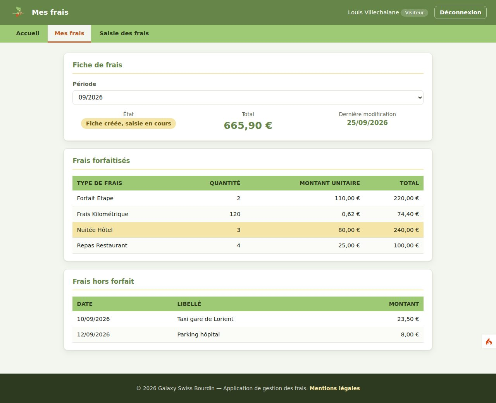
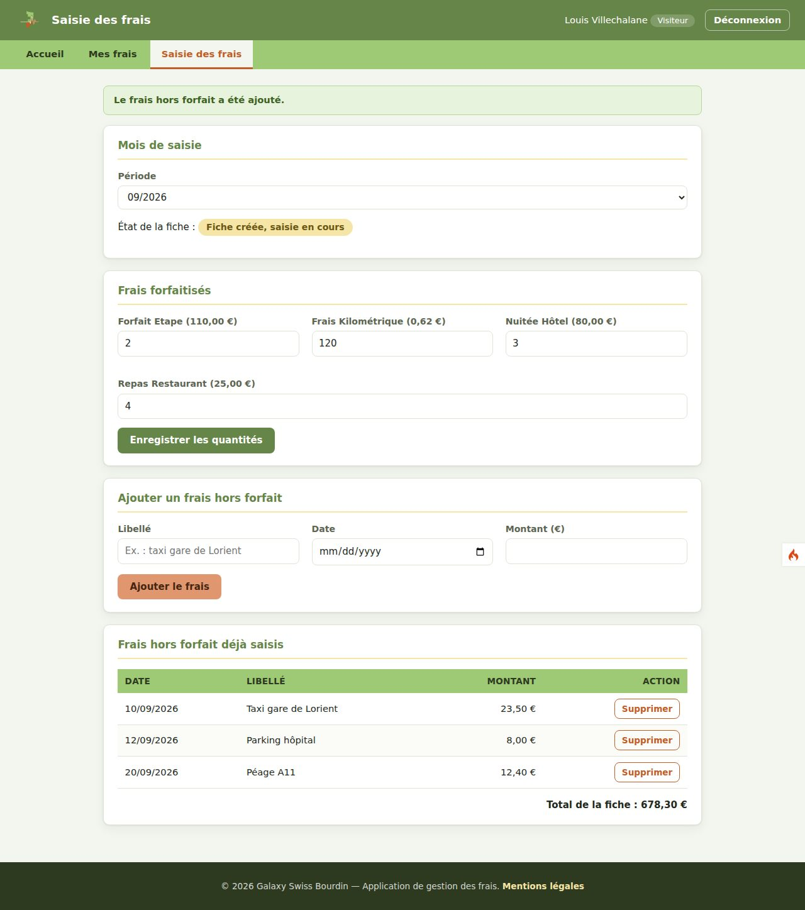
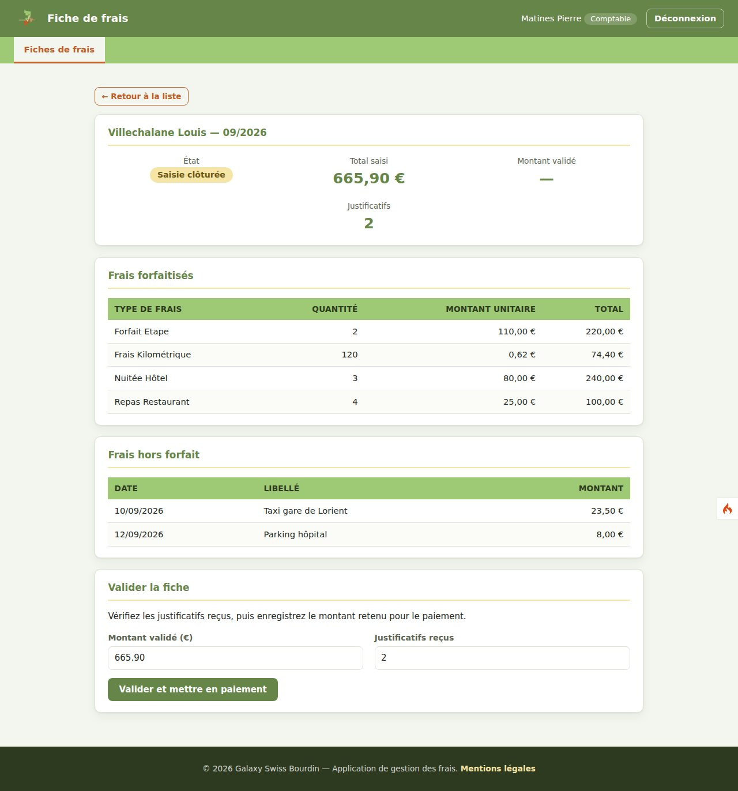
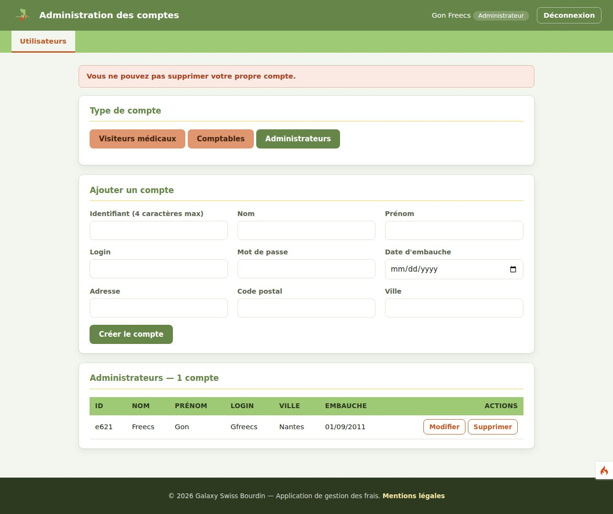

GSB : refonte de la gestion des frais en MVC
Contexte
Galaxy Swiss Bourdin (GSB) est un laboratoire pharmaceutique fictif utilisé comme fil rouge en BTS SIO. Ses visiteurs médicaux déclarent leurs frais de déplacement dans une application web, réalisée en groupe en première année.
Objectif
Reprendre cette application seul et la réorganiser en architecture MVC avec le framework CodeIgniter 4, pour séparer clairement les données, l'affichage et la logique.
Fonctionnalités
- Trois profils : visiteur médical, comptable et administrateur.
- Saisie et consultation des frais forfaitisés et hors forfait, mois par mois.
- Validation des fiches et mise en paiement par le comptable.
- Gestion des comptes utilisateurs par l'administrateur.
Ce que je fais
- Migration du code PHP existant vers des modèles, des vues et des contrôleurs CodeIgniter.
- Reprise et correction du code, de la base de données et des documents de l'an dernier.
- Suivi des tâches sur Trello et versionnement du code sur GitHub.
- Livrables : dossier d'examen, documentation utilisateur et démonstration finale.
- PHP
- CodeIgniter 4
- MySQL
- Git et GitHub
- Trello







